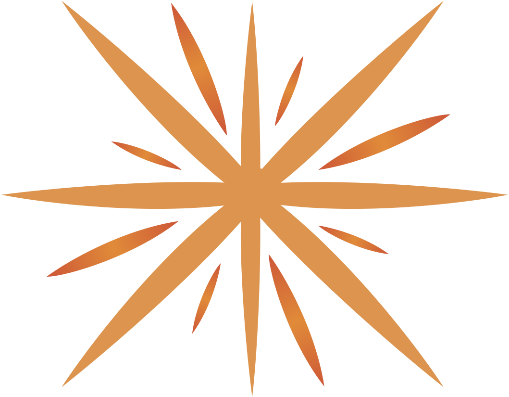

Communauté Tock
Tock est bâti sur un modèle communautaire pour créer une plateforme ouverte.
Pour en savoir plus, voir pourquoi Tock.
La communauté Tock est ouverte à la contribution et tous les retours comme les feature requests et pull requests sont les bienvenus !
Rejoindre la communauté (Gitter)
La plupart des utilisateurs et contributeurs Tock se retrouvent sur la messagerie instantannée Gitter. C'est un bon moyen de voir à quel point la communauté est active et accessible.
Suivre l'actualité de la plateforme
Pour suivre l'actualité des projets Tock mais aussi les meetups, conférences, etc., rendez-vous sur le site principal :
Vous pouvez également retrouver les nouveautés dans ces pages plus spécfiques :
Enfin, pour suivre les versions et fonctionnalités de Tock :
Code & Contribution (GitHub)
L'ensemble de la plateforme et des outils est partagé sur GitHub sous licence Apache 2.
Pour en savoir plus sur l'organisation des dépôts, les conventions de code, etc. voir le
guide de contribution Tock. Pour tout autre forme de contribution, n'hésitez pas à utiliser les issues
GitHub et à contacter directement la communauté avec Gitter.
<a href="https://github.com/theopenconversationkit/tock/"

Association TOSIT
La solution Tock est actuellement activement étudiée et expérimentée par l'association TOSIT (The Open Source I Trust), une structure de soutien à l’Open Source qui vise à soutenir l’émergence de codes, logiciels et solutions informatiques sous licence open source et/ou licence libre.
Fondée par Carrefour, EDF, Enedis, Orange, Pôle Emploi et SNCF, TOSIT compte depuis d'autres membres importants comme Le Ministère des Armées, Société Générale ou MAIF par exemple.
Tock s'inscrit dans le cadre du Groupe de Travail Chatbots du TOSIT.
La solution est d'ores et déjà utilisée par plusieurs membres du TOSIT, dont SNCF.
Pour en savoir plus, voir le site de l'association : http://tosit.fr/

Hébergement de la Démo publique
La plateforme publique de démonstration Tock est destinée à faciliter la prise en main de la solution. Elle est accompagnée d'un guide pour faire ses premiers pas. Merci à e.Voyageurs SNCF qui héberge et maintient cette plateforme de démo en ligne.
Aide
Que ce soit pour de l'aide, des questions, des suggestions :
n'hésitez pas à nous contacter.